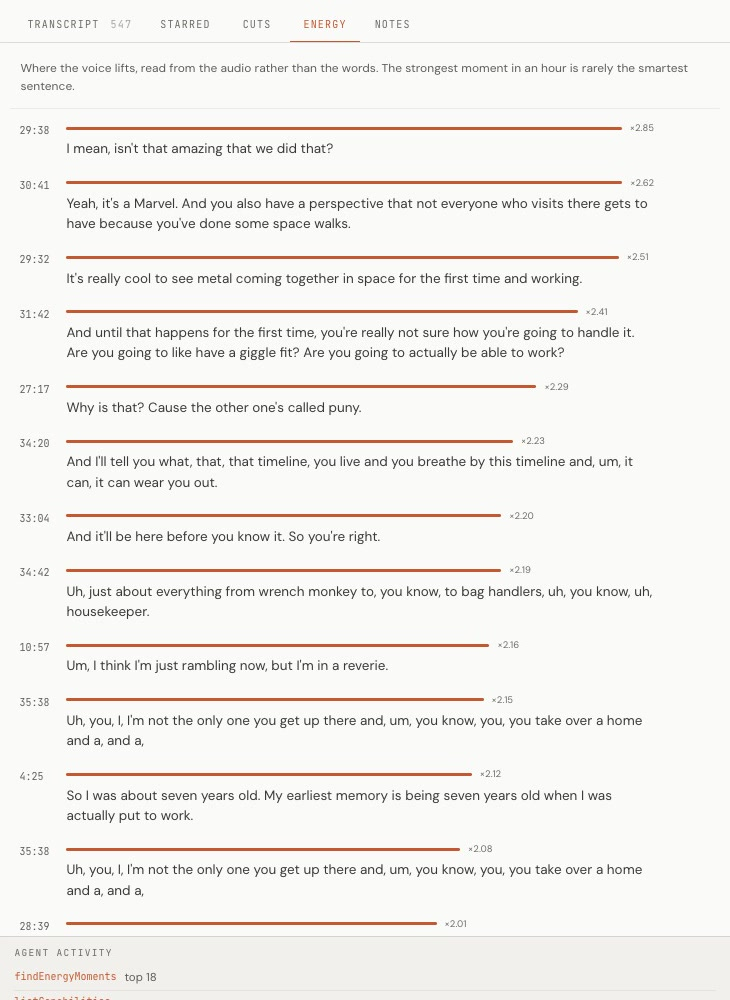
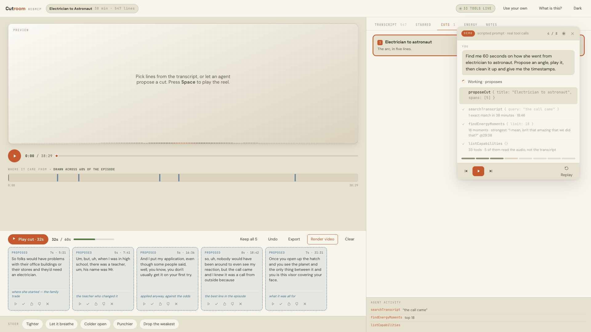
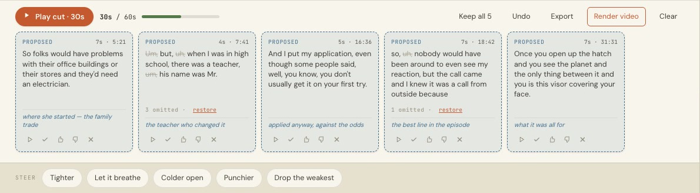
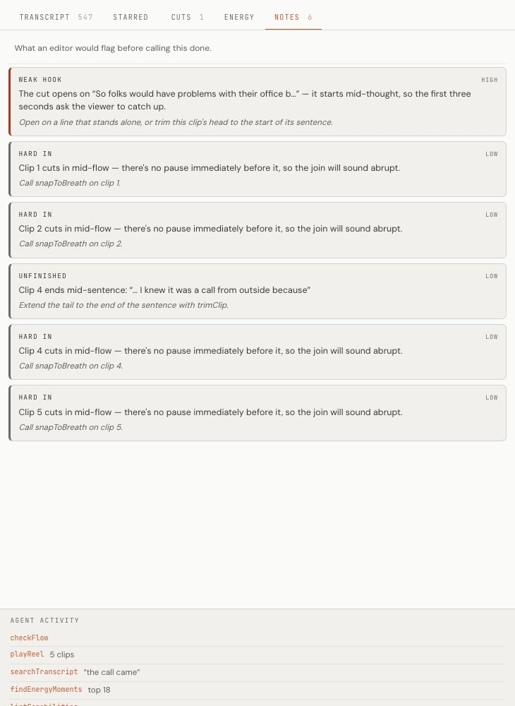
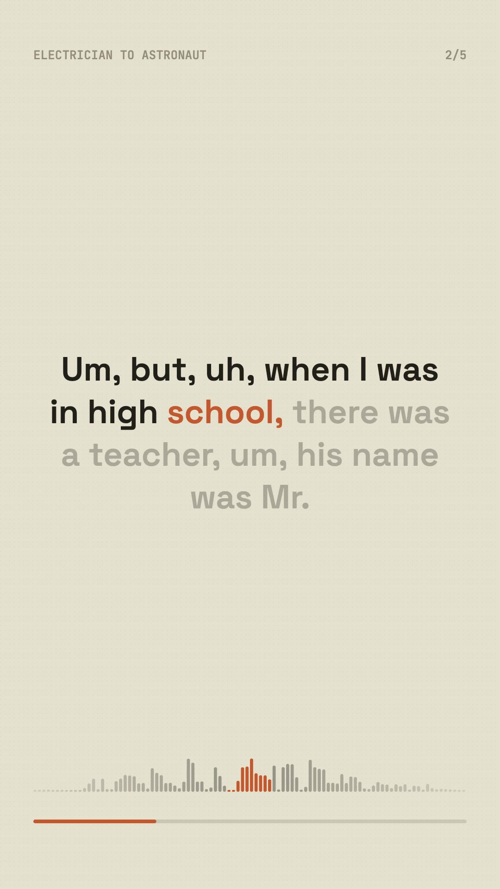

Five of the 33 tools read the waveform, not the words. The strongest moment in the episode is a line no keyword search would rank.

Five clips land dashed, drawn from across 68% of the hour. A thumbs-down goes straight back through getReelState.

Four struck out, 1.1 seconds saved, nothing actually said is lost — and every one can be restored with a click.

Weak hook. A sentence sheared off. Joins that land on speech instead of in a pause. Each one names the clip and the fix.

A 1080×1920 MP4 with word-by-word captions, rendered in the browser with no server — or every span to a hundredth of a second, plus an ffmpeg command that has been run and checked.
